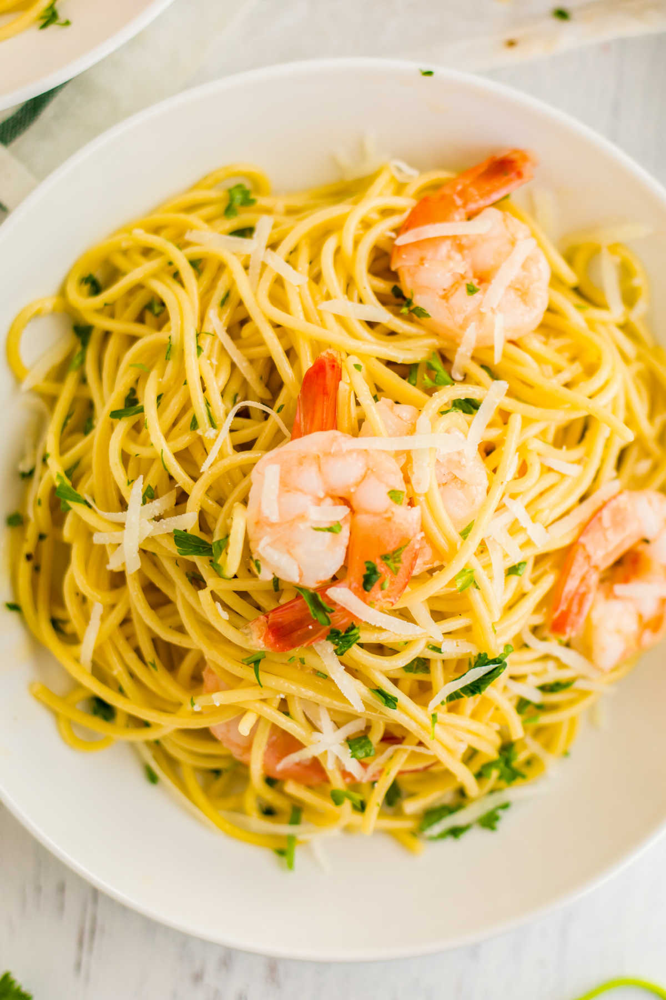

Shrimp Scampi with Pasta

What Is Shrimp Scampi?
Shrimp scampi is a seafood dish made of shrimp cooked in a butter, garlic, and
white wine sauce. You can serve shrimp scampi by itself as an appetizer or
over pasta as a main dish.
Ingredients
-
Shrimp: Choose large shrimp (31 to 35 shrimp per pound) to get best results
for this recipe.
-
Pasta: This recipe uses a 16-ounce package of linguine, but you can
substitute the pasta of your choice, like angel hair pasta, fettuccine, or
spaghetti.
-
Butter: Use unsalted butter. You can add salt to taste later in the recipe.
-
Extra-virgin olive oil: The flavor of the olive oil comes through in this
recipe, so use the best quality.
-
Shallots and garlic: These aromatics add flavor and fragrance to shrimp
scampi.
-
White wine: Use a dry, crisp white wine for shrimp scampi sauce. Pinot
grigio or sauvignon blanc are good choices, and you can drink the leftover
wine with dinner.
- Lemon juice: Use freshly squeezed lemon juice for the best flavor.
-
Seasonings: Kosher salt and freshly ground black pepper amplify the flavors,
and a pinch of dried red pepper flakes give shrimp scampi a subtle kick. Use
more red pepper flakes if you like things a bit more spicy.
-
Parsley: Fresh parsley adds eye-catching color and a bright, peppery flavor.
Steps
- Gather ingredients.
-
Bring a large pot of salted water to a boil; cook linguine in boiling water
until nearly tender, 6 to 8 minutes. Drain.
-
Melt 2 tablespoons butter with 2 tablespoons olive oil in a large skillet
over medium heat.
-
Cook and stir shallots, garlic, and red pepper flakes in the hot butter and
oil until shallots are translucent, 3 to 4 minutes.
-
Season shrimp with kosher salt and black pepper; add to the skillet and cook
until pink, stirring occasionally, 2 to 3 minutes. Remove shrimp from
skillet and keep warm.
-
Pour white wine and lemon juice into skillet and bring to a boil while
scraping the browned bits of food off of the bottom of the skillet with a
wooden spoon.
-
Melt 2 tablespoons butter in skillet, stir 2 tablespoons olive oil into
butter mixture, and bring to a simmer.
-
Toss linguine, shrimp, and parsley in the butter mixture until coated;
season with salt and black pepper. Drizzle with 1 teaspoon olive oil to
serve.
- Serve hot and enjoy!